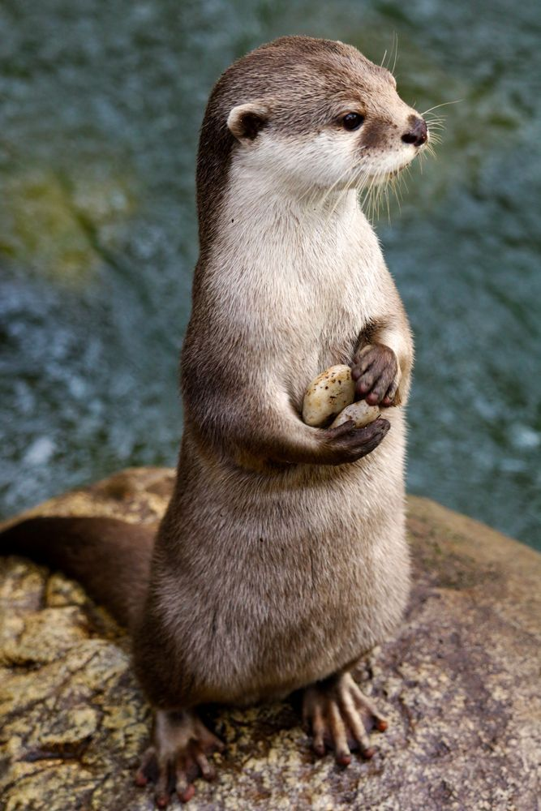
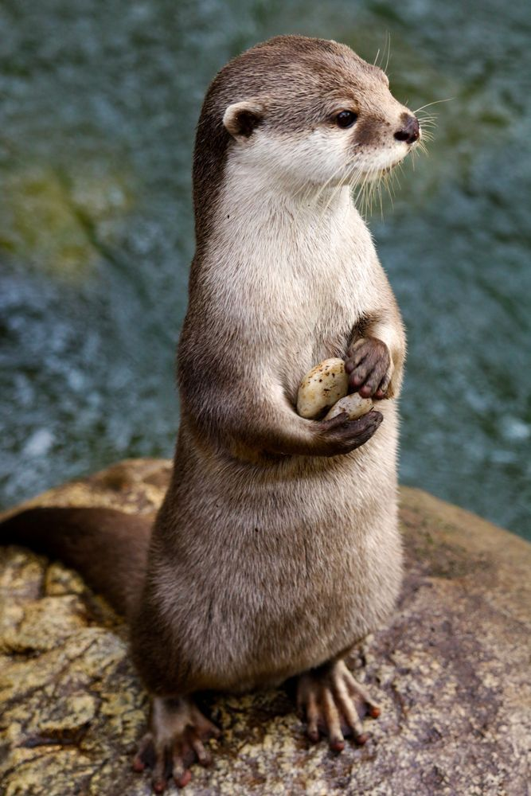

Sobre as Lontras
As lontras são animais mamíferos que vivem em rios, lagos e até no mar. São conhecidas por sua agilidade na água, por brincarem bastante e por usarem pedras como ferramentas para quebrar alimentos.
As lontras são animais mamíferos que vivem em rios, lagos e até no mar. São conhecidas por sua agilidade na água, por brincarem bastante e por usarem pedras como ferramentas para quebrar alimentos.
